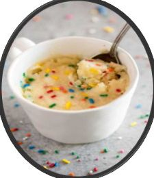
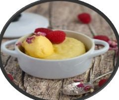

(“La felicidad se hornea en una taza, un dulce momento de sabor y calidez”).
• Tiempo: 5–7 min (prep. + micro).
• Fácil.
-4 cdas harina (≈30 g).
-2 cdas azúcar.
-1/4 cdita polvo de hornear.
-3 cdas leche.
-1 cda aceite vegetal o mantequilla derretida.
-1 huevo pequeño.
-1/2 cdita extracto de vainilla.
-Pizca de sal.
(breve):
1. En una taza grande mezcla harina, azúcar, polvo de hornear y sal.
2. Añade leche, aceite, huevo y vainilla; bate con un tenedor hasta quedar sin grumos.
3. Cocina en microondas a potencia alta 60–90 segundos (según tu micro; empieza con 60).
4. Deja reposar 1 min antes de probar.
Tip: añade 1 cdita de chispas de chocolate antes del micro o
sirve con una cucharada de helado.
“Cocinar con esmero es un acto de Amor” - Craig Claiborne.
 